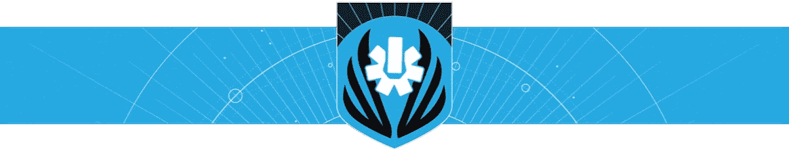

15:30 UTC / 8:30 AM PDT
Destiny 2 and its APIs go offline in the supplied maintenance notice.
Preview the supplied maintenance schedule and the existing timeout message. These are demonstration states, not live Bungie status. No account requests are made.

Character data is unavailable while Bungie's Destiny 2 API is offline for scheduled maintenance.
API expected back around 17:00 UTC (10:00 AM PDT).
Maintenance is expected to conclude around 18:00 UTC (11:00 AM PDT). These are Bungie's estimates, not guaranteed return times.
Check Bungie's maintenance updatesDestiny 2 and its APIs go offline in the supplied maintenance notice.
API expected online. Queues and sign-on issues may continue.
Maintenance expected to conclude. Check Bungie for extensions.
The supplied notice has no date heading, and the failed Journey attempt has no confirmed timestamp. This preview does not establish that today's failure was maintenance-related. Tuesday's 17:00 UTC weekly reset alone does not prove an outage or provide a return time. The notice's first time is unclear and is not used here.